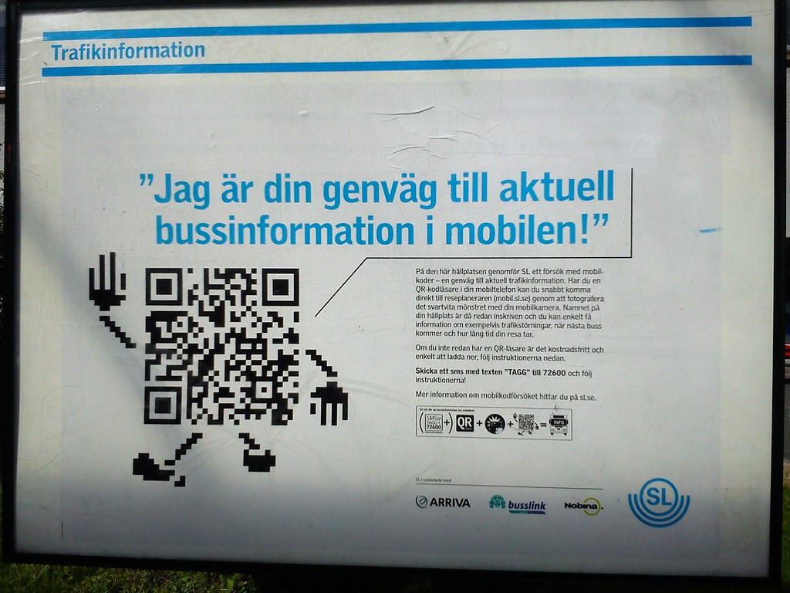

A payment product in Kuwait rarely stalls because of code. It stalls when a settlement file does not reconcile to the last fils, when onboarding fails at the Civil ID check for users nobody thought about, or when nobody in the room has spoken to anyone at KNET about certification. None of that appears in a proposal.
If you are comparing every Kuwait banking API developer India option available, this guide covers what the work involves: how the Central Bank of Kuwait supervises the market, where KNET sits, what is worth sending offshore. Viantha Solutions builds these integrations from Trichy in Tamil Nadu, with our headquarters in Singapore, and Kuwait is one of the markets we work in every week.
The same pattern shows up in every core banking API integration GCC engagement: the screen flow is the easy half, and the settlement file that must reconcile to the last fils is the half that decides how the project is remembered.
Key Takeaways
- Settle the licensing question first. CBK supervises banks and licenses e-payment operators, and the category you sit in decides the architecture.
- KNET is the shared rail for debit, POS, gateway and now Wamd instant transfers. Most payment logic routes through it one way or another.
- Islamic banks dominate the market, so profit structures and disclosures differ from conventional lending. Get them from the core, not from a spreadsheet.
- Spring Boot, React, AWS. Start with a paid pilot on one integration and keep the certification window in the plan.
In This Guide
What CBK Actually Supervises
The Central Bank of Kuwait has regulated banks since 1968 and has been steadily extending that reach into payments. Banks are supervised directly; payment providers fall into licensed e-payment categories that decide what they may handle, how funds settle and what gets reported. Two teams can build the same screen flow and land on different obligations depending on which side of that line the product sits.
If you are hiring a CBK digital banking software developer, the first useful question is about classification, not about frameworks: is this a payment instrument, an e-money arrangement, or a bank-sponsored feature that keeps the bank in the loop for every movement of funds? CBK has also been pushing the operating hours of the national payment systems wider, and instant transfers through Wamd now run around the clock. Longer windows mean more reconciliation, not less.
KNET: The Rail Most Things Run Through
KNET, formally the Shared Electronic Banking Services Company, was set up in 1992 by the local banks to connect their systems, and it still sits in the middle of debit cards, POS terminals, ATMs and the payment gateway used across Kuwait. It operates under CBK's e-payment supervision. Practically, most payment work in this market touches KNET infrastructure, whether your product is a wallet, an instalment offer or a corporate collection service.
Most KNET payment API integration India work is gateway work done carefully: tokenisation, 3-D Secure handling, refunds and chargebacks, batch settlement files, and reconciliation that runs after the gateway has gone quiet for the night. KNET has also modernised the merchant-facing side, moving the gateway toward direct card entry and new acceptance methods. Certification windows are scheduled with them, and those windows are the part of the plan people consistently under-estimate.

What Actually Gets Handed to an offshore Team
Most of the Kuwait fintech API integration offshore work that reaches us travels well, because it has clear edges and testable outcomes. Realistic examples of what comes to us:
Wallet, POS and settlement integrations
Virtual IBAN provisioning, ledger synchronisation, settlement file ingestion, and the daily job that explains every mismatch by name. Banks in Kuwait have started publishing API suites for licensed e-wallet providers, so the integration surface is growing faster than the headcount on either side. This sits inside our API integration practice.
Onboarding, KYC and identity
Civil ID document capture, liveness checks, sanctions and PEP screening, and the boring states that decide whether an application completes: pending, expired, manual review, re-submission. Write the audit trail your compliance officer will ask for on day one, because retrofitting it later costs more than the original build.
Lending and core-facing services
Eligibility pre-checks, financing calculators, statements and status APIs. We build these for Islamic and conventional products; the personal loan solutions page shows the shape of the work.
Islamic Banking Is the Default, Not a Variant
Kuwait's market is led by Islamic banks, with Kuwait Finance House, Boubyan Bank and others holding the largest share of the sector. That has direct engineering consequences. Financing follows structures such as murabaha, ijara and wakala, profit is expressed as a rate or a markup schedule rather than plain interest, and early settlement, deferred payment fees and disclosure wording all behave differently from a conventional loan.
So the API must not return a single monthly number and let the frontend guess how it was derived. Pull the calculation and the disclosure fields from the product engine, expose them as structured data, and test against real contract configurations. Miss this and the customer sees a figure the Shariah board never approved.
The Fintech Scene: Wallets, Digital Brands and API Partnerships
Kuwait has an unusually lively fintech layer for its size. Payment brands such as STC Pay Kuwait operate alongside bank-launched digital experiences, and NBK and Boubyan are among the digital initiatives most often cited. The banking side is equally active: NBK, for example, announced an API suite and virtual IBAN services built for licensed e-wallet providers, which is exactly the kind of partnership that generates integration demand on both ends.
Two honest observations about buying behaviour. Kuwait is a Gulf market with heavy Indian business ties, so finding a Gulf fintech developer India teams already work with is easy and the daily overlap is better than people expect. That does not shorten procurement: a technical evaluation can be agreed in one meeting while commercial approval takes another six weeks. Vendors with nobody on the ground enter through an existing regional client or a local partner; those who skip that step lose the first two deals while they learn the process.
How the Engagement Actually Runs
The stack is Spring Boot on the backend, React for customer and operator frontends, and AWS for hosting, queues and alerting. Engineers work from Trichy in Tamil Nadu, the headquarters is in Singapore, and Kuwait is two and a half hours behind India, so a day that begins at 10:30 in Trichy is 8:00 in Kuwait City and the local afternoon is covered.
Engagements open with technical discovery, then a paid pilot on one integration delivered to your repository, then a dedicated team with a weekly demo. If you would rather skip the process and show us the system, send us the integration brief and an engineer replies the same working day. For clients who need capacity rather than a full team, our IT staffing practice places engineers with BFSI experience as well.
FAQs Clients Ask Us
Do you work as an offshore banking API developer Kuwait from India?
Yes. We are an offshore banking API developer Kuwait banks and payment companies work with from India, covering KNET and Wamd payment flows, e-wallet and virtual IBAN integrations, onboarding and KYC, and core-facing services. The engineering team sits in Trichy, Tamil Nadu, the headquarters in Singapore, and Kuwait is only two and a half hours behind us, so the working day overlaps almost completely.
What does a KNET payment integration actually involve?
Gateway integration and tokenisation, 3-D Secure handling, refunds and chargebacks, batch settlement files, and reconciliation that runs after the gateway has gone quiet for the night. KNET is the shared network owned by Kuwaiti banks, so certification and testing windows are scheduled with them, and those windows are the part of the plan people consistently under-estimate.
How does CBK licensing affect a fintech build?
The Central Bank of Kuwait supervises banks directly and licenses e-payment services operators, which includes the shared banking services company and licensed payment providers. Classification decides your permitted activities, settlement model and reporting duties, so we settle that question with your compliance team before architecture work starts.
Talk to an Engineer, Not a Sales Rep
Describe the integration you need and the system it has to fit into. we will tell you honestly what it takes and whether we are the right team for it.
Start a Conversation Explore Services